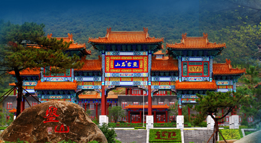

景区介绍一
世外桃源景区是根据晋代陶渊明所著的《桃花源记》中描绘的意境，结合当地的田园山水风光开发建设的首批国家AAAA景区，并通过了ISO14001国际环境管理体系认证和ISO9001国际质量管理体系的认证，是世界旅游组织推荐旅游目的地，全国农业旅游示范点。景区位于桂阳公路旁，距桂林45Km、距阳朔15Km，田园风光、民俗风情、民寨大观有机排序，与大自然的秀美山水融合为一体，使您在观赏山光水色、民俗风情的同时，又能领略多姿多彩的风情。 景区的游览方式主要分水上游览和徒步观赏。水上的游览乘轻舟环绕湖光山色，园村舍，过绿树丛林，又穿山而出，沿途可经原始形态的迎宾、祭祀、狩猎，又可 欣赏到民族特色的狂歌劲舞、边寨风情；徒步观赏的民寨群是桂北各少数民族建筑的一个缩影，鼓楼、风雨桥、对歌台、花楼、长廊、图腾，充分展示了各民族文化 的光彩特征。 渊明山庄是景区有机的组成部分，融合了苏州园林的布局和桂北民居的建筑风格，开窗即景，一窗一景，移步换景。在渊明山庄里还可以回顾古文明的光辉，古代的酿酒、造纸、印刷、竹雕、木刻、陶器表演，再现了中华民族的智慧。 在这里，你将留下深深的旅游印记，在桂林有一个比传说更美的地方，一个梦中的理想家园，这就是遗落在人间的仙境——世外桃源！
别山湖是大别山最高峰白马尖脚下最大的湖泊，湖面长30公里，平均宽度2公里，最深的地方70米，这是大别山区海拔最高的水上旅游观光区，观赏这高峡出平湖的水上大别山区风光， 山上的景点与宽窄不一的湖泊组合成诗画般的山水画卷。站在别山湖边，四季美景足以让来此的游客心旷神怡，流连忘返，这是大别山中的蓬莱仙境，春天青山绿水， 鸟语花香；夏天湖风拂面，清凉爽心；秋天烟锁雾罩，红枫似火；冬天群山逶迤，银装素裹。
xxxxxxx景区是根据晋代陶渊明所著的《桃花源记》中描绘的意境，结合当地的田园山水风光开发建设的首批国家AAAA景区，并通过了ISO14001国际环境管理体系认证和ISO9001国际质量管理体系的认证，是世界旅游组织推荐旅游目的地，全国农业旅游示范点。景区位于桂阳公路旁，距桂林45Km、距阳朔15Km，田园风光、民俗风情、民寨大观有机排序，与大自然的秀美山水融合为一体，使您在观赏山光水色、民俗风情的同时，又能领略多姿多彩的风情。
景区的游览方式主要分水上游览和徒步观赏。水上的游览乘轻舟环绕湖光山色，园村舍，过绿树丛林，又穿山而出，沿途可经原始形态的迎宾、祭祀、狩猎，又可 欣赏到民族特色的狂歌劲舞、边寨风情；徒步观赏的民寨群是桂北各少数民族建筑的一个缩影，鼓楼、风雨桥、对歌台、花楼、长廊、图腾，充分展示了各民族文化 的光彩特征。
渊明山庄是景区有机的组成部分，融合了苏州园林的布局和桂北民居的建筑风格，开窗即景，一窗一景，移步换景。在渊明山庄里还可以回顾古文明的光辉，古代的酿酒、造纸、印刷、竹雕、木刻、陶器表演，再现了中华民族的智慧。
在这里，你将留下深深的旅游印记，在桂林有一个比传说更美的地方，一个梦中的理想家园，这就是遗落在人间的仙境——世外桃源！
世外桃源景区是根据晋代陶渊明所著的《桃花源记》中描绘的意境，结合当地的田园山水风光开发建设的首批国家AAAA景区，并通过了ISO14001国际环境管理体系认证和ISO9001国际质量管理体系的认证，是世界旅游组织推荐旅游目的地，全国农业旅游示范点。景区位于桂阳公路旁，距桂林45Km、距阳朔15Km，田园风光、民俗风情、民寨大观有机排序，与大自然的秀美山水融合为一体，使您在观赏山光水色、民俗风情的同时，又能领略多姿多彩的风情。 景区的游览方式主要分水上游览和徒步观赏。水上的游览乘轻舟环绕湖光山色，园村舍，过绿树丛林，又穿山而出，沿途可经原始形态的迎宾、祭祀、狩猎，又可 欣赏到民族特色的狂歌劲舞、边寨风情；徒步观赏的民寨群是桂北各少数民族建筑的一个缩影，鼓楼、风雨桥、对歌台、花楼、长廊、图腾，充分展示了各民族文化 的光彩特征。 渊明山庄是景区有机的组成部分，融合了苏州园林的布局和桂北民居的建筑风格，开窗即景，一窗一景，移步换景。在渊明山庄里还可以回顾古文明的光辉，古代的酿酒、造纸、印刷、竹雕、木刻、陶器表演，再现了中华民族的智慧。 在这里，你将留下深深的旅游印记，在桂林有一个比传说更美的地方，一个梦中的理想家园，这就是遗落在人间的仙境——世外桃源！